Stroke & Strum
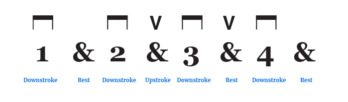
악보 표기: 다운/업 스트로크 기호
피크나 손가락으로 여러 줄을 동시에 내려치거나 올려치는 주법입니다. 곡의 리듬과 비트를 표현하는 가장 기본 기법입니다.
코드표, 스케일, 연습 기술 정리
기초가 되는 필수 코드부터 화려한 솔로 연주를 위한 스케일, 다양한 연주 기법을 단계별로 정리했습니다. 눈으로 코드 모양을 확인하고, 손으로 천천히 반복하면서 익히는 것이 가장 중요합니다.
| 코드명 | 근음 난이도 |
코드 모양 | 특징 및 연습 팁 |
|---|---|---|---|
| C Major | 5번 줄 도 ★☆☆ |
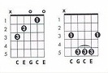 |
가장 기본이 되는 코드입니다. 6번 줄은 정확히 뮤트해서 소리가 나지 않도록 연습하는 것이 핵심입니다. |
| G Major | 6번 줄 솔 ★☆☆ |
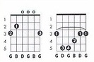 |
손가락을 넓게 벌려야 하므로 손가락을 프렛과 수직에 가깝게 세워 잡는 연습이 필요합니다. |
| E Minor | 6번 줄 미 ☆☆☆ |
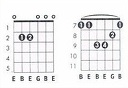 |
손가락 두 개만 사용하므로 가장 쉬운 편이고, 낮고 묵직한 울림이 특징입니다. |
| F Major | 6번 줄 파 ★★★ |
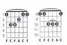 |
대표적인 하이 코드입니다. 검지 전체에 균일하게 힘을 주는 훈련이 필요해서 초보자에게 어렵게 느껴집니다. |
| D Major | 4번 줄 레 ★☆☆ |
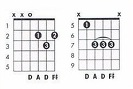 |
4번 줄이 근음이므로 저음부인 5번과 6번 줄은 소리가 나지 않게 엄지손가락으로 살짝 감싸 안아 뮤트하는 것이 핵심입니다. 맑고 경쾌한 느낌을 주는 코드입니다. |
| A Major | 5번 줄 라 ★☆☆ |
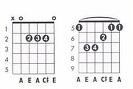 |
검지, 중지, 약지 세 손가락을 2번 프렛이라는 좁은 공간에 오밀조밀하게 모아서 잡아야 합니다. 다른 줄을 건드리지 않도록 손가락을 둥글게 세우는 연습이 필요합니다. |
| B Minor | 5번 줄 시 ★★★ |
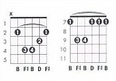 |
F Major 코드와 함께 초보자를 좌절하게 만드는 대표적인 하이 코드입니다. 검지로 1~5번 줄을 동시에 강하게 누르고, 검지 끝부분으로 6번 줄을 살짝 건드려 뮤트해야 하므로 악력과 요령이 필요합니다. |
구성음: 1도부터 7도까지 빈틈없이 총 7개의 음으로 꽉 차 있습니다.
메이저: 장음계라고 하며 밝고 경쾌하고 완성된 느낌을 줍니다. 예를 들어 C 메이저는 도-레-미-파-솔-라-시로 구성됩니다.
마이너: 단음계라고 하며 메이저 스케일에서 특정 음인 3도, 6도, 7도를 반음씩 내린 형태입니다. 슬프고 어두운 느낌을 줍니다.
기타에서의 특징: 음이 촘촘하게 배열되어 있어 화려하고 멜로디컬한 연주에 필수적입니다. 다만 초보자가 지판에서 7개 음을 차례대로 치려다 보면 손가락이 꼬이기 쉽고, 딱딱한 손가락 연습처럼 들릴 수 있습니다.
구성음: 마이너 펜타토닉 기준으로 1도, 단3도, 4도, 5도, 단7도 총 5개 음으로 이루어져 있습니다.
특징: 충돌을 일으키는 반음 간격이 사라졌기 때문에 어떤 순서로 쳐도 불협화음이 잘 나지 않습니다. 반주 위에 아무렇게나 짚어도 그럴싸한 솔로 라인이 만들어지는 안정성이 있습니다.
기타에서의 특징: 손가락 두 개만으로 한 줄에서 두 음씩 치며 다음 줄로 넘어가기 좋은 블록 형태를 가집니다. 록, 팝, 가요 등 대중음악 기타 솔로의 대부분이 이 펜타토닉 스케일을 뼈대로 만들어집니다.
구성음: 마이너 블루스 기준으로 마이너 펜타토닉의 5개 음에 감5도인 블루 노트가 추가됩니다.
블루 노트의 역할: 4도와 5도 사이에 들어가는 이 음은 화성학적으로 매우 불안정하고 묘한 불협화음을 만듭니다.
기타에서의 특징: 불안정한 블루 노트를 벤딩이나 슬라이드로 살짝 건드렸다가 안정적인 다른 음으로 넘어가면 긴장이 해소되면서 블루스 특유의 애절하고 우는 듯한 감성이 살아납니다. 기타 솔로에 생명력을 불어넣는 조미료 같은 스케일입니다.
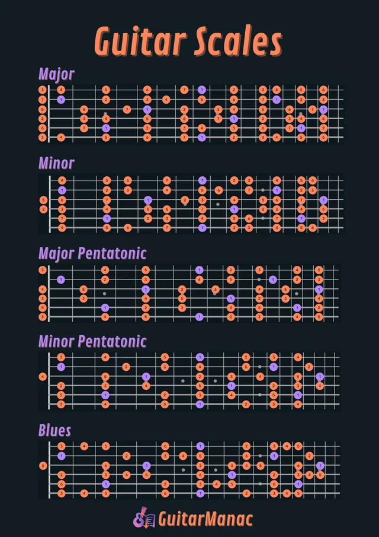

피크나 손가락으로 여러 줄을 동시에 내려치거나 올려치는 주법입니다. 곡의 리듬과 비트를 표현하는 가장 기본 기법입니다.
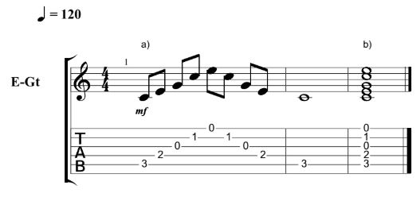
화음을 한 번에 내지 않고 한 줄씩 풀어서 차례대로 연주합니다. 발라드나 잔잔한 곡에 잘 어울립니다.
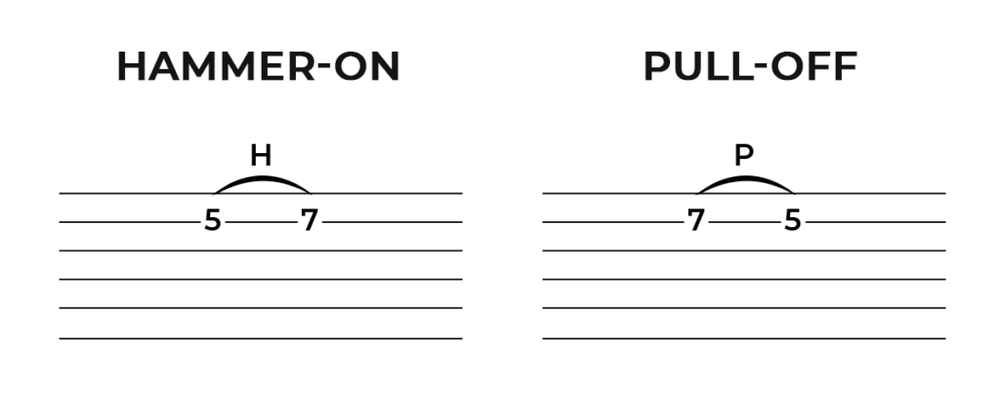
해머링 온은 줄을 튕긴 뒤 다른 손가락으로 프렛을 때려 소리를 내고, 풀링 오프는 손가락을 떼며 아래 음을 냅니다.
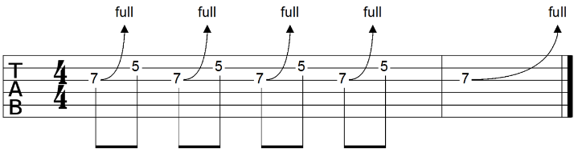
줄을 위나 아래로 잡아당겨 음의 높이를 올리는 기술입니다. 일렉기타에서 감정을 표현할 때 많이 쓰입니다.
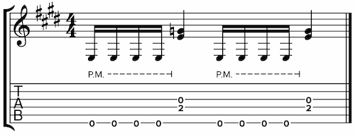
오른손 날을 브릿지 근처 줄에 살짝 대어 울림을 먹먹하게 만드는 테크닉입니다. 락 음악에서 묵직한 리듬을 만들 때 유용합니다.